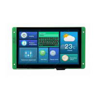
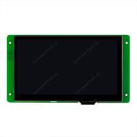
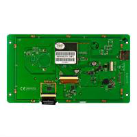
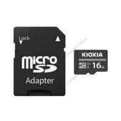
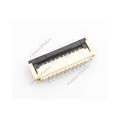
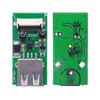
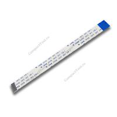
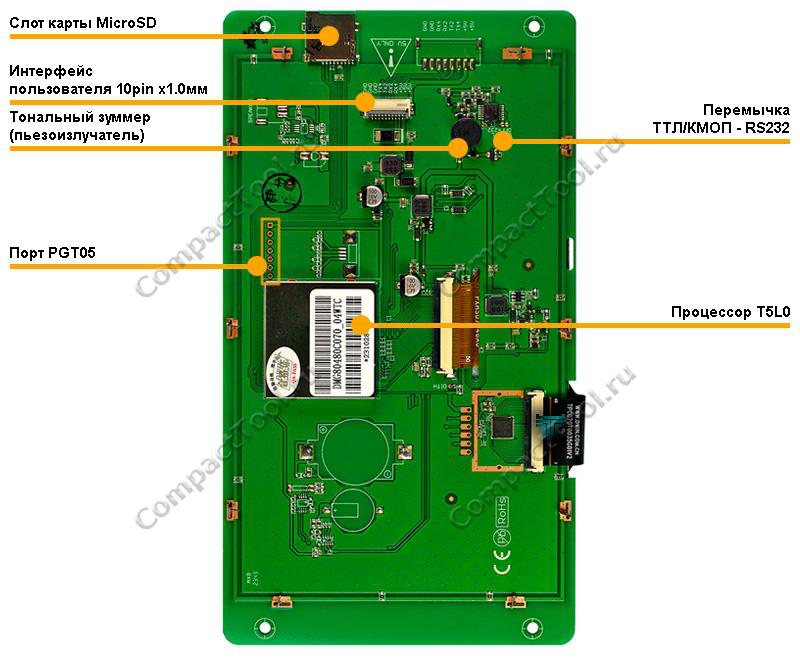
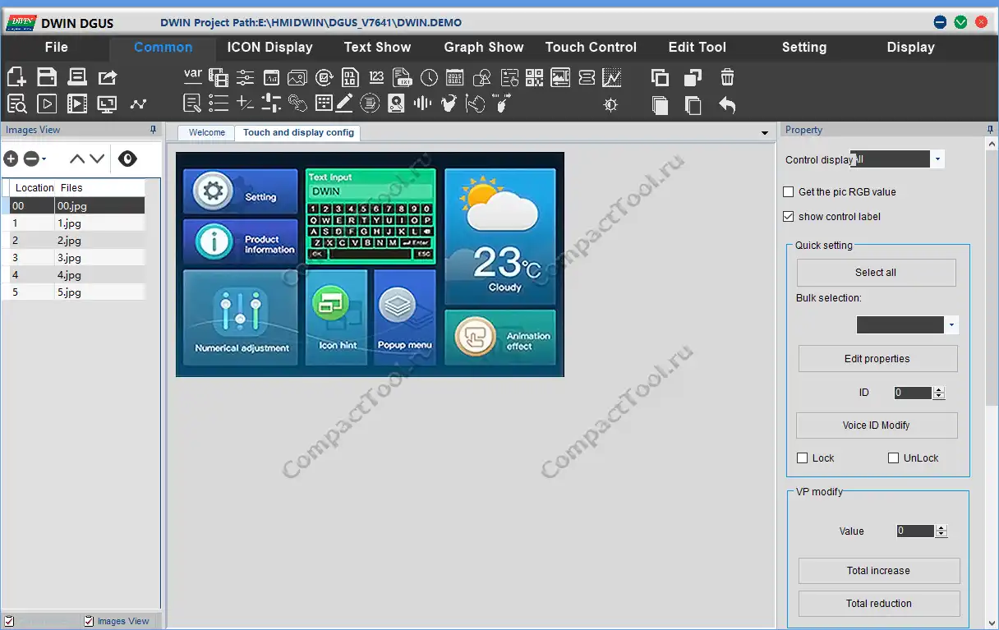
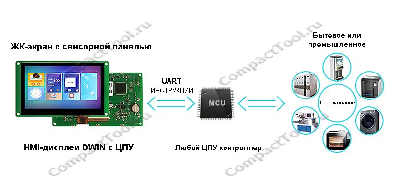

ПредыдущийСледующий
ПредыдущийСледующийDWIN DMG80480C070_04WTC Дисплей HMI 7" 800*480



2700₽
менее 10 шт.
Оригинальное название:
DWIN 7 Inch HMI LCD Display DMG80480C070_04WTC
С этим товаром покупают

Карта памяти KIOXIA micro SDHC 16Gb Class 10 UHS-I U1 (DWIN SD001)

DWIN FFC/FPC 10x1.0мм SMT Коннектор

HDL662B DWIN Адаптер USB/UART-TTL 10pin 1.0мм

FCC1015A DWIN Плоский гибкий соединительный кабель 10pin 1.0мм
Описание товара
Технические характеристики
Буквально ещё "вчера" о множестве ныне существующих мультифункциональных микроэлектронных устройств с простым и удобным интерактивным управлением приходилось лишь только мечтать. Привыкшему к повсеместному окружению высокотехнологичными цифровыми гаджетами, современному молодому поколению порой затруднительно представить, как на протяжении всего лишь нескольких десятков лет существенно поменялись и продолжают преображаться инструменты взаимодействия человека с электронной машиной. Вместо уходящих в прошлое устаревших методов управления приборами в виде всяких ручек, тумблеров, циферблатов, ламповых и стрелочных индикаторов, всё чаще появляются абсолютно новые, высокотехнологичные решения с интегрированным интеллектуальным человеко-машинным интерфейсом (Human Machine Interface, HMI-интерфейсом). К самым узнаваемым образцам HMI-устройств, которыми многие ежедневно и активно пользуются, относятся смартфоны и планшеты, автомобильные магнитолы последнего поколения, а также фитнес-браслеты, почтовые постаматы, кассы самообслуживания в супермаркетах, билетные кассы общественного пассажирского транспорта и информационные стойки. Ключевым элементом ведения двухстороннего диалога в таких устройствах служит интерактивный графический экран с сенсорной панелью, способный визуализировать информацию и принимать команды, отданные машине касанием пальцев человеческой руки.
Сенсорные HMI-дисплеи DWIN характеризуют себя универсальным, полностью самодостаточным продуктом, обладающим высоким уровнем производительности и надёжности. На основе дисплеев DWIN активно ведётся разработка большого количества проектов с запланированной интеграцией HMI-интерфейса, о чём свидетельствует растущая заинтересованность разработчиков-изготовителей электронных устройств в сферах промышленности и медицины, автомобилестроения и коммерции, в том числе и в потребительском секторе. За счёт неоднократно проводимых улучшений конструкции и внутренней аппаратной оптимизации, все без исключения доступные на рынке графические HMI-модули DWIN входят в низкобюджетный ценовой диапазон.
Спроектированные специально для задач создания HMI-интерфейса с совершенно любым тематическим наполнением, устройства DWIN предлагают альтернативный вариант быстрой и лёгкой разработки пользовательского графического интерфейса (GUI) взамен классического подхода, c затратным по времени написанием, оптимизацией и отладкой равнозначной части кода приложения, которому потребуется некоторый объём свободных аппаратных ресурсов. Весь модельный ряд HMI-устройств DWIN выпускается в широком спектре технических характеристик, работает на фирменной ОС с ядром DGUS, поддерживает бесплатную программную среду DGUS для разработки дизайн-прошивки GUI. На выбор присутствуют несколько видов графических матриц TN/EWTN/IPS круглой, квадратной или прямоугольной формы с диагональю 1.3 - 21.5 дюйма и графическим разрешением от 240х240 до 1920х1080(FullHD) точек с цветовой палитрой 65 тыс., 262 тыс. или 16.7 млн. оттенков. Программируемые экранные панели DWIN отличаются друг от друга установленным резистивным или ёмкостным тачскрином (в том числе есть модели без него), наличием коммуникационных интерфейсов UART-TTL, GPIO(SPI/ADC/PWM), RS232, RS485, CAN и др, встроенной звукопроигрывающей системой, размерами внутренней памяти, допустимыми условиями эксплуатации и иными параметрами. В дисплейных модулях DWIN реализован, пожалуй, самый простой способ обновления пользовательского ПО без необходимости демонтажа HMI-устройства, предусматривающий загрузку с самой обычной флеш-карты, хранящей в себе предварительно подготовленные файлы нового приложения. Традиционный метод прошивки ПО DWIN организован через последовательную шину пользовательского интерфейса с проводным подключением к порту ПК.
Аппаратные компоненты DWIN DMG80480C070_04WTC

Дисплейные модули DWIN нового поколения построены на однокристальных двухъядерных процессорах T5/T5Lx с базовой архитектурой Intel 8051 и тактовой частотой до 250МГц. Чипы T5/T5Lx ASIC с проприетарной начинкой разработаны внутри компании-производителя DWIN Technology. Высокоэффективные программируемые процессоры семейства T5/T5Lx прекрасно справляются с быстрой визуализацией сценариев графического интерфейса и обработкой его ресурсов, состоящих из строго структурированного набора файлов фоновых изображений, иконок активных или пассивных элементов GUI, шрифтов, звуковых и видеофайлов, преобразованных в совместимый формат, и записанных пользователем в ПЗУ-память HMI-устройства. Актуальная среда разработки DGUSII для линейки T5Lx уже сейчас насчитывает более 30 разнообразных дизайнерских компонентов GUI и поддерживает симуляцию для отладки или оценки GUI-приложения на любом этапе его проектирования. Процессоры DWIN T5/T5Lx также позволяют HMI-интерфейсу пользовательского приложения реагировать на внешние события, вызванные через встроенную сенсорную панель, и обеспечивают возможность взаимодействия с прочим микроэлектронным оборудованием через имеющиеся каналы проводной (в некоторых сериях ещё и беспроводной) связи. Для большинства HMI-модулей DWIN приложение с графическим интерфейсом программируется методом ручной настройки соответствующих параметров каждого задействованного в GUI компонента, напрямую из окна визуального редактора DGUS. Знание машинных языков и владение навыками программирования для создания собственного уникального статичного или динамичного GUI при этом совершенно не требуется.
Графический интерфейс среды разработки DWIN DGUS

Ключевая концепция построения приложения с HMI-интерфейсом DWIN

Ссылки